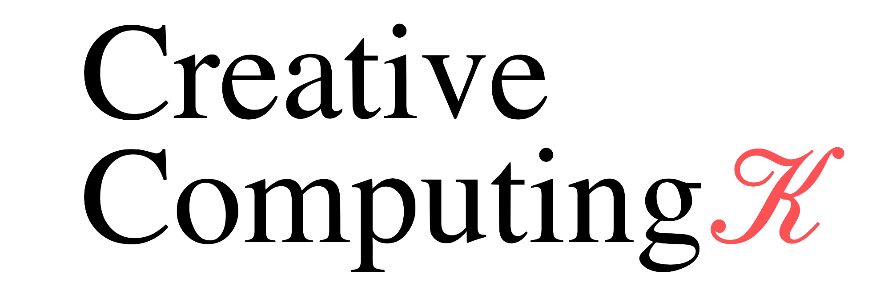

Creative Computing is designed to introduce students to programming as a creative medium— as a way of making and exploring. The coursework focuses on developing a vocabulary of interaction design principles which can then be applied across a range of platforms. Students are encouraged to experiment with various media, tools, and techniques, ultimately producing a portfolio of interactive and visual projects designed for the screen. An emphasis is placed on typography as it applies to a screen context, research—based problem solving and a "learning through making" approach to technical skill building. Historical and current interaction design precedents will be discussed.
